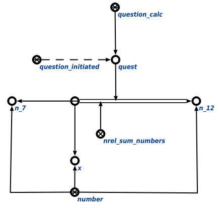

Задачей агента сложения и вычитания величин и чисел является сложение и вычитание величин и чисел. Данный агент инициируется при условии появления в памяти вопросной конструкции, соответствующей запросу вычисления математического выражения. Аргументом запроса является либо связка отношения сложение чисел*, либо связка отношения сложение величин*. Пример вопросной конструкции представлен ниже:
